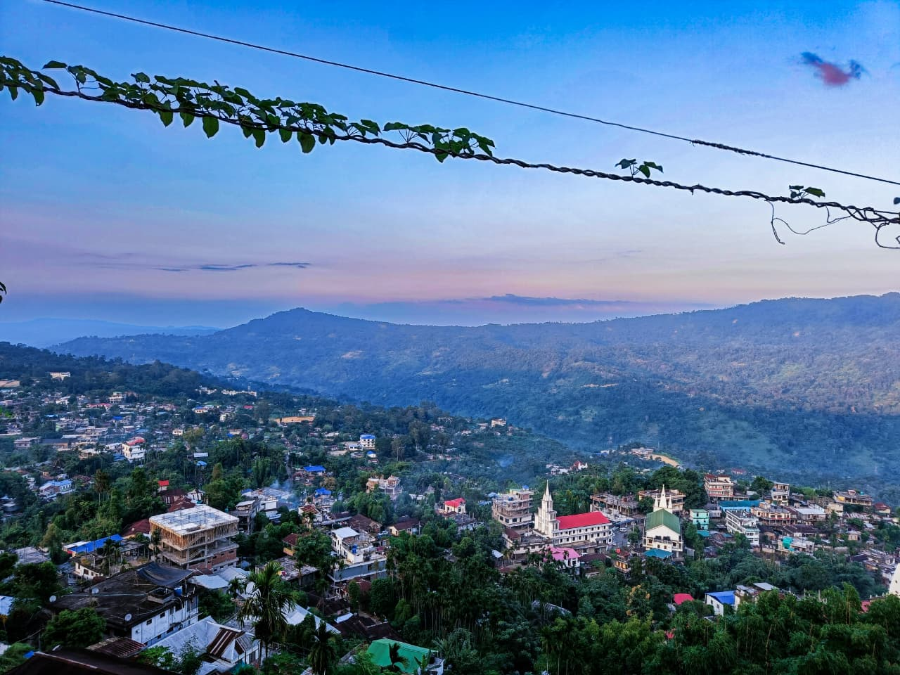
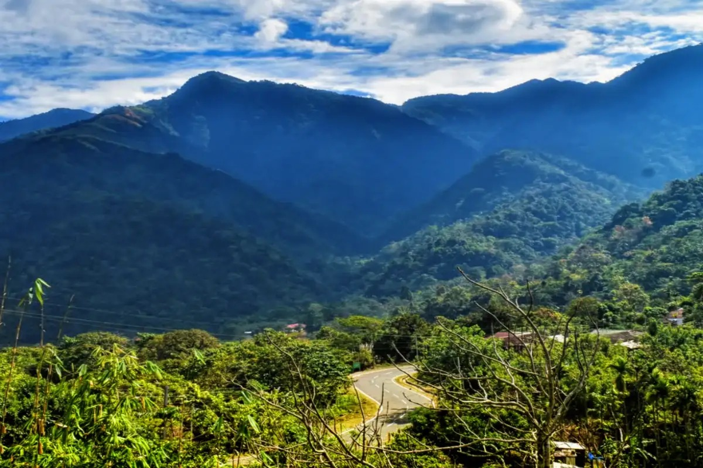
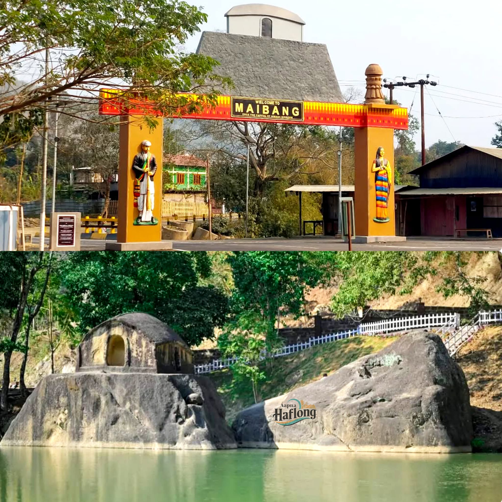
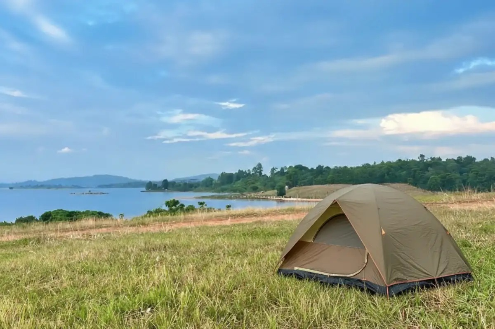

Dima Hasao is blessed with numerous tourist attractions that showcase the natural beauty, historical heritage and cultural richness of Assam. The district attracts visitors with its green mountains, peaceful lakes, beautiful waterfalls, traditional villages and historical monuments. These attractions provide opportunities for sightseeing, photography, nature appreciation, birdwatching and learning about the traditions of indigenous communities. The following are some of the important tourist attractions of Dima Hasao.
|
 |
1. HaflongHaflong is the headquarters of Dima Hasao district and is widely recognised as the only hill station in Assam. Situated among the beautiful hills of the Barail range, Haflong is famous for its scenic landscapes, pleasant surroundings, green valleys and peaceful atmosphere. Its elevated location offers beautiful views of the surrounding hills and makes it different from the plains of Assam.Haflong is an attractive destination for tourists who wish to enjoy nature away from crowded urban areas. The town is surrounded by green vegetation, forest-covered slopes and winding roads that provide opportunities for sightseeing and photography. During certain seasons, mist covers the hills and creates an especially beautiful landscape. Visitors can explore the town, observe local life, enjoy the natural scenery and learn about the culture of the region.Haflong also serves as an important starting point for exploring nearby attractions such as Haflong Lake, Jatinga and other scenic locations. Its importance as the district headquarters makes it a centre for administration, transportation and tourism-related activities. The development of accommodation, transport and visitor facilities can further strengthen Haflong's role as an important tourist destination in Northeast India. Haflong Lake is one of the most popular tourist attractions in Haflong town. Surrounded by the beauty of the hill station, the lake provides a peaceful environment for visitors. Its water, surrounding greenery and scenic setting make it an attractive place for sightseeing, relaxation and photography. The lake is an important part of Haflong's tourism identity because it offers visitors a natural attraction within the town itself. People can spend time enjoying the surroundings, observing the landscape and appreciating the peaceful atmosphere. The lake is also a suitable location for learning about the importance of water bodies in maintaining the beauty and environmental balance of a region. Haflong Lake contributes to the local tourism economy by attracting visitors who explore the town and nearby places. Keeping the lake clean, preventing pollution and maintaining its surroundings are important for preserving its beauty. Responsible tourism and environmental awareness can help ensure that the lake remains an attractive destination for future generations. |
2. JatingaJatinga is a well-known village in Dima Hasao, located approximately nine kilometres from Haflong. It is internationally known for a seasonal bird phenomenon that has attracted the attention of researchers, birdwatchers and nature enthusiasts. During particular weather conditions and seasons, some birds gather and become disoriented around illuminated areas at night. The phenomenon is often popularly described as the mysterious bird phenomenon of Jatinga. Jatinga is also surrounded by green hills, beautiful landscapes and a peaceful rural environment. Its natural setting makes it an interesting destination for visitors who wish to explore the countryside and learn about the region's biodiversity. The seasonal bird phenomenon has made the village especially significant for ornithological interest and environmental education. Bird conservation is an important aspect of tourism in Jatinga. The protection of birds and their habitats helps maintain ecological balance and supports responsible birdwatching. Visitors should respect local guidelines and avoid disturbing wildlife. Jatinga demonstrates how a natural phenomenon can create tourism interest while also highlighting the need for scientific understanding and wildlife protection. |
 |
|
 |
3. MaibangMaibang is an important historical town in Dima Hasao, situated on the banks of the Mahur River. It is closely associated with the history of the Dimasa Kingdom and served as one of the important capitals of the Dimasa rulers during the historical period. The town is therefore significant for understanding the political, cultural and architectural heritage of the region. One of the notable attractions of Maibang is the historic Ramchandi Temple, a distinctive stone structure associated with the region's historical heritage. The town is also known for historical remains, stone inscriptions and monuments connected with the past. These places provide opportunities for visitors to learn about the history of the Dimasa people and the development of their kingdom.Maibang attracts tourists who are interested in history, architecture and cultural heritage. Its location among the hills also provides a scenic environment for exploration. Protecting historical structures and educating visitors about their significance are important steps towards preserving the heritage of Dima Hasao. Historical tourism in Maibang can help strengthen local cultural awareness while creating opportunities for sustainable tourism development. |
4. PanimurPanimur Waterfall is one of the most remarkable natural attractions of Dima Hasao. Located along the Kopili River, the area is known for its rapids, rocky landscape and flowing water. Depending on the season, the river's water can display different shades, creating an attractive natural scene surrounded by hills and greenery. The waterfall is sometimes popularly called the “Niagara of Assam” because of its striking appearance.The sound of flowing water, surrounding rocks and natural vegetation make Panimur an appealing place for sightseeing and landscape photography. The location is also associated with the cultural traditions of the Dimasa community, who regard the area as a place of religious significance and traditionally visit it for a holy bath on Magh Purnima.Panimur has considerable potential for nature tourism and environmental education. Visitors can appreciate the river landscape and learn about the importance of protecting rivers and their surrounding ecosystems. However, river currents and slippery rocks can be dangerous, particularly during periods of heavy rainfall. Visitors should follow local safety advice and avoid entering unsafe water. |
|
|
 |
5. UmrangsoUmrangso, also spelled Umrangso, is a notable town in Dima Hasao, famous for its scenic surroundings, reservoir lake and natural landscape. The artificial lake was created following the construction of a dam across the Kopili River by the North Eastern Electric Power Corporation Limited (NEEPCO). The lake, surrounded by green hills, forms one of the town's most recognisable attractions.Umrangso offers a combination of natural scenery and human-made infrastructure. The reservoir and surrounding hills attract visitors interested in photography, sightseeing and peaceful outdoor experiences. The town is also known for its natural golf course, which adds to its recreational appeal.Another interesting feature of Umrangso is its association with the seasonal arrival of Amur falcons. The birds migrate over long distances, and their presence has contributed to local interest in bird conservation. The Falcon Festival also provides opportunities to experience the cultural traditions of the region.Umrangso demonstrates the tourism potential of combining natural attractions with cultural activities and environmental awareness. Better visitor facilities, waste management and responsible tourism practices can help preserve the beauty of this destination. |
Dima Hasao has a wide variety of tourist attractions that combine natural beauty, cultural diversity and historical importance. Haflong and Haflong Lake are known for their scenic surroundings, while Jatinga attracts attention because of its seasonal bird phenomenon.Maibang preserves important historical connections with the Dimasa Kingdom, and Panimur Waterfall showcases the beauty of the Kopili River.Umrangso, together, these attractions create opportunities for sightseeing,heritage exploration, birdwatching and environmental education.With improved facilities, community participation, wildlife conservation and responsible tourism practices, Dima Hasao can continue to develop as an important tourist destination in Northeast India. Protecting its natural landscapes and historical heritage is essential to ensure that future generations can enjoy and learn from this remarkable region.
| << Previous | Next >> |